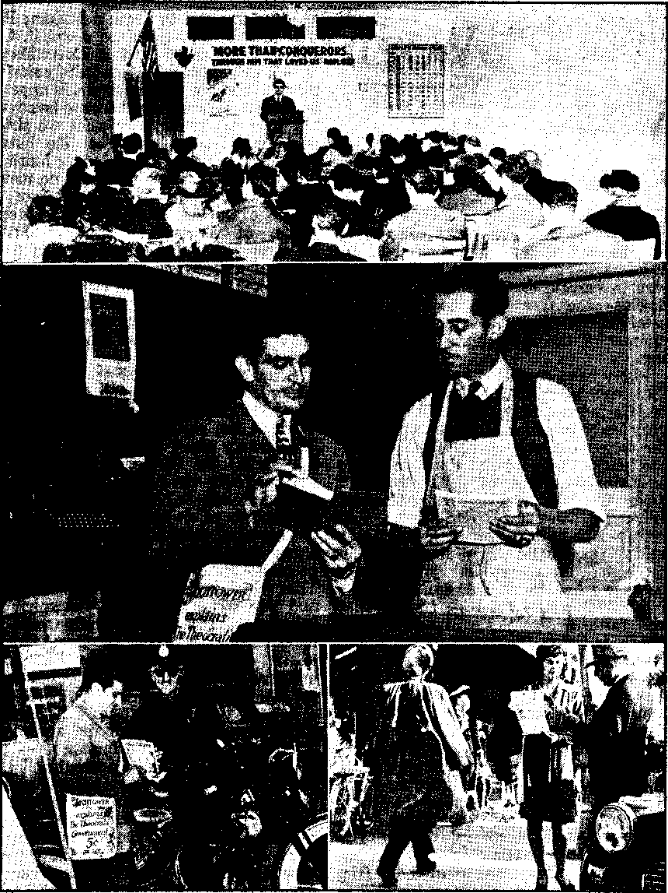
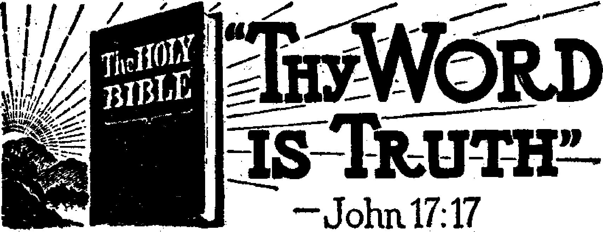

Contents
Notandum
A Passing1 Actor, Protestantism
Preachers of' Righteousness Needed .
Demagogues Crowd Closing Scenes
Jehovah’s witnesses at Beverly Hills
“Thy Word Is Truth”
Some Facts Concerning the Earth
Pondering the Creator’s Wisdom
“Religion’s Big Brother”-—Interest
Presenting “This Gospel of the Kingdom”
Why Bible Chapter-Reading Falls Short
Published every other Wednesday by watchtower bible and TRACT SOCIETY, INC. 117 Adama St,, Brooklyn 1, N. TM U- S* A*
OFFICERS Pretldent N. H. Knorr
Secretary W. E. Van Amburyh
Editor Clayton J. Wood worth
Five Cento a Copy $1 a year in the United States |1,25 to Canada and all other countries
NOTICE TO SUBSCRIBERS
Remittance#: For your own safety, remit by postal or express money order, When coin or currency is lost In the ordinary malls, there is no redress. Remittances from countries other than those named below may be made to the Brooklyn office, but only by International postal money order.
Receipt of a new or renewal subscription will be acknowledged only when requested. Notice of Expiration is sent with the journal one month before subscription expires, Please renew promptly to avoid loss of copies. Send change of address direct to us rather than to the post office. Tour request should reach us at least two weeks before the date of issue with which It is to take effect. Send your old as well as the new address. Copies will not be forwarded by the post office to your new address unless extra postage Is provided by you.
Published also in Greek, Portuguese, Spanish, and Ukrainian.
. OFFICES FOR OTHER COUNTRIES
England 34 Craven Terrace, London, W. 2
Australia 7 Beresford Road, Strathfield, N. S- W.
South Africa 623 Boston House, Cape Town
Mexico Calzada de Melchor Ocampo 71, Mexico, D. F. Brazil Caixa Postal 1319, Rio de Janeiro *
Argentina Calle Honduras 5646-48, Buenos Aires
Entered aa second-class matter at Brooklyn, N. Y.(
under the Act of March 8, 1679,
The Tunnels from the Monastery
♦ Do you remember that place where the Lord and the apostles shut themselves up in a monastery and dug tunnels deep underground, hooking up with cellars that led them to “wine, women and song”! No! Peter was a decent man; he had his own wife; so had John, to whose home Mary went after Jesus’ death; and, i indeed, when the apostle Paul asked the question in 1 Corinthians 9: 5, he seems to have implied {Diaglott translation) that “the other apostles” all had their own homes. .
So these stories that fill the newspapers about the tunnels in Cassino, Italy, that crisscross the town but all , lead to' and from the Benedictine Monastery, and have led the German soldiers f to and from every part of the city, and ’ caused the death of nobody knows how ; many Allied soldiers, make a dark tale. '
The newshounds swing their whitewash brushes desperately, trying to make out that these saintly monks were not just drunken rakes. The Scranton Times, March 25, under the caption “Sought Buried Treasures” has this:
Three tunnels dug under the town in the Sixteenth Century, in connection with searches for buried treasure, according to local tales, enabled the Germans to move their troops in from one strong point to another, a headquarters spokesman said. . . . These underground passages, believed to be sixty feet below the surface in some sectors and ten to twenty in others, probably explain how so many Germans survived the furious Allied aerial bombardment that virtually obliterated the town on March 15, how the enemy has been able to bring up reinforcements despite the way the Fifth Army’s artillery has been raking the outskirts of Cassino, and how more Nazis suddenly appeared in the Continental Hotel [good place to sleep off a jag] after its garrison appeared to have been wiped out.
The truth may come out even yet. Nobody can hide anything from Jehovah.
I-
I r-1 -i ------ - j— *■ . "i1"'1- ■*■ • ... rt- r.. „ ^~lt — - — - —- - - ■ ■ . - ■ ..------— ---■ _ .. j—_ .. _ j. .. _»■ .------. ----------—. . ... f, .-----
--- ■*■— -1-- . — — .. —■- - —-—■ l..~f ------■—*—~~
Volume XXV Brooklyn, N. Y., Wednesday, April 26, 1944 Number 642
T ABELED by the pope as the “strong” J-J man of the German-controlled Vichy government, Pierre Laval has the unique distinction of being a man nobody can trust. He occupies such a peculiar position with reference to France that it seems necessary to give some attention to a man who otherwise is beneath the notice of decent men.
Nobody likes to come right out and bluntly accuse Laval of having made his money as a panderer, but the fact is often hinted at. The Socialist papers say he had the art of selecting the most glamorous women in France for his establishments, and that the reason no open charges are made is that there were too many prominent men involved. A few citations, read between the lines, show how this “strong” man managed to pile up his millions:
He has been, in turn, a schoolmaster without education, a lawyer without knowledge ■l
of the law, a politician without a party. . . . Laval has a soft voice, and that is one of his charms. It can make the most astonishing statements sound sincere. . . . A string of provincial newspapers and a table-water bottling business are the obvious sources of his wealth, although how they came to be acquired is a mystery. There were often threats of inquiry, but there were always too many who were interested in avoiding scandal. —P. J. Philip, former Paris correspondent of the New York Times.
It is dangerous to tread the line of honor with anzenemy, if one is in earnest; dirty if one isn’t. Petain himself followed it, babbling of his own honor and Hitler’s honor, while he assisted the vice and mineral water rack
eteer Pierre Laval in pinioning France before handing her over to the Nazis. ... If anybody had told Georges Clemenceau at the end of the World War I that twenty-two years later Petain would share control of France ■jointly with a German corporal and the then defeatist and petty swindler Laval, he wouldn’t have seen the joke.—London Cavalcade.
Laval is one of the cleverest men in France.
He has a dominating personality. His versatility and capacity for work are almost without limit. He claims to be a realist, like Hitler, Stalin and Mussolini. He never bothers about
principles, never having had any. National honor, the plighted word mean nothing to him,
and he would have greeted with a sneer Patrick Henry’s immortal cry, “Give me liberty
or give me death!”—Henry Noble Hall, first secretary of the British embassy in Paris, in New York World-Telegram.
Having no principle, as the above extracts disclose, Laval has always been a “peace at any price” man. That's simple enough. All one has to do is to go along with every crooked government in everything they have on hand. Anybody can do that. In 1931 Laval, then France's premier, was hailed as a great man because of the deal arranged in Berlin that thenceforth France and Germany would be at peace because of the Franco-Germanic Economic Commission. Two years later Hitler was in the saddle, and since then there has been much to pay all round.
Four years later Laval was in Rome on the same errand, which was also successful, on paper. On that trip he did something that not another member of the French government had done since the establishment of the French Republic. He called on the pope and made an agreement which it was even then claimed would result in the reuniting of church and state. In other words, as the then French foreign minister, he betrayed his country. The Franco-Italian accord reached on that occasion, between Mussolini and Laval, was hailed as one more grand peace-making agreement. Five years later Mussolini stabbed France in the back. This shows how much confidence can be placed in a deal between two politicians, when neither' one of them is trustworthy.
APRIL 26, 1944
Shifted back into the premiership again a year or so later Laval lost his job because of joining up with the papal plan of splitting Ethiopia, thus doublecrossipg the League of Nations. He was egged along by the papal legate. Sir Samuel Hoare, British foreign secretary, went down with him. But Laval is never down for long. ‘ '
The Germans were no sooner in Paris than Laval was there, as Petain’s representative, to see what he could do to please the conquering Germans by aping in Vichy France their methods of government. He got in trouble a few months later when he threatened Petain with personal violence, and was put on the shelf for a year. .:
Laval hates Britain so much that at press conferences he is said to have almost frothed at the mouth when tile
J T ■ J 1
country was mentioned. .....
The magazine Friday, in its issue of November 22,1940, contains five splendid illustrated pages by Andre Simone entitled “T’accuse! The.....Men Who
Betrayed France”. See what he has to say as to who ruined France, and the place in that list of infamy which he accords to this man Laval:
During the almost seventy years the Third French Republic existed, many governments came* and went, over a hundred of them, but all the while the country was actually governed by the fifteen regents of the Bank of
France. It constituted a “money wall” which no government was able to breach. In 1931 the capital of the Bank of France was divided among 31,000 shareholders. But of these only 200 had the right to vote at general meetings of the Bank. These 200 shareholders were called “the 200 Families of France”.
The fifteen regents came from the great banking houses, from commerce and industry. They controlled the money of the nation; hence they dominated most of its industrial mechanism. They enjoyed the closest connections with the leading members of the military caste, many of whom sprang from collateral branches of the same families. Their sons, nephews and sons-in-law held key positions in the Foreign Office,' in the Finance Ministry and in the State apparatus. They furnished the diplomats who represented France in foreign countries. They financed, and lavishly, their own political parties and groups. They were the extremist backers of extremist groups ; the most important of these, the Croix de Feu, was led by Colonel Casimir de la Rocque. Originally a non-political exservicemen’s group, the Croix de Feu was now organized along fascist lines. It was already common gossip that its arms and weapons came from military arsenals. From the first days of Hitler’s regime the “200 families’^ gazed with envy across the Rhine. By 1934 they judged France ripe for remodelling in the image of Italy and Germany. . . .
It was Laval who laid the foundations for the future defeat of France. Laval had helped Hitler win a smashing success in the Saar plebiscite; he allowed the Fuehrer to commit the first open breach of the Versailles Treaty by introducing military conscription in Germany; he signed the Franco-Soviet Treaty of Mutual Assistance only to do everything to render it valueless. He backed Mussolini in his war against Abyssinia. He ruined the system of Collective Security. Laval came originally from the French Socialist Party. He achieved prominence just prior to the
r
:war (1914) as a “poor man’s lawyer”. By • 1935 Laval’s fortune was estimated higher than $3,500,000. He had entered politics in 1914 penniless. His main source of income [after his first “enterprise”] came as a result of his conjaections with Francois de Wendel, the potentate of the Comite des Forges (French Steel Trust) land one of the world’s most contemptible erooks]. ’
His Master’s Most Active Tool
It was Laval’s regime that turned French In do-China over to Japan. As Hitler’s most active tool in France it is now his task to make the French people hate the British and Americans, and with all his other work he actually retains and makes use of the Ministry of Propaganda. Goebbels is helping him in this, and between them they fill the Paris and Vichy papers with invective against the United Nations and praise of Hitler and the “New Order”. The pope is carefully kept .out of sight, as very few of the French have any use for the one that is at the bottom of the world’s present troubles.
Perhaps no expression of disgust with a man could be more complete than was shown at Washington when five members of the French embassy staff resigned when Laval regained power on April 22, ■ 1942. One of these was the counselor of the embassy who said he could not serve under a German agent, and such he con-I sidered Laval to be. It is generally held that Laval has staked his all on a German victory, with the idea in the back of his head that he will be an important figure at the peace conference. And, in the light of his visit to the pope, he may he even at that.
One of the most reprehensible things Laval ever did was to close 1,300 French factories, with the idea of forcing the former employees to seek -work in Germany, at the rate of three expert able-bodied w'orkers in exchange for one disabled prisoner of war. On this subject he said:
I have grave reasons for asking them to go and work in Germany. It concerns something more than our daily life. France cannot remain passive and indifferent before the immensity of the sacrifices which Germany is making to rebuild a Europe in which we must take our place. We shall have to negotiate peace one day. Workers of France, it is to you that our prisoners will owe their freedom.
In other wmrds, here is a man who confesses that he cannot remain passive and indifferent when he sees one man robbing another, but wants to turn in and help make it a good job, in the hope of making something out of it in the long run. And he is in a hurry about it, as in the same speech he said:
I have the certitude, and do not doubt for an inst ant that I am speaking the truth when I say that if Germany should be beaten the Soviets wmuld dictate the law of Europe.
To a man who has scooped up $3,500,-000 (don’t ask howT he got it) that means a lot. Laval is afraid that the Russians (who, in this case, correspond to the police) might want an accounting.
Cruelty to Refugees
After their escape into France, in February, 1939, some 100,000 Spanish Republicans w’ere concentrated in Vichy France, under intolerable conditions. Among them were 3,000 members of the International Brigade. These soldiers were the first in the world to fight against ‘ Fascism, but Pope Pius XI, Franco, Hitler, Mussolini and the Jesuits were too much for them, and, as nbithbr Britain nor the United States wmuld help them, they were compelled to flee to what was then believed to be a land of liberty. This man Laval ordered that these unfortunates must either go willingly to Germany as laborers or go back to Spain. Whichever way they go, they are almost sure of torture and death. Mexico alone, of all the so-called “civilized nations” of the earth, has done anything w’orth while to help these unfortunates. The United Nations are now belatedly taking up the
fight for the four freedoms exactly where these Spanish Republicans left off.
Again, when Belgium was overthrown some members of the Belgian cabinet streamed into France, along with about 2,000,000 others fleeing from Hitler’s panzer divisions. These men should have been given protection, as they were officials of France’s former allies, but Laval f r
had all of these men arrested, and, though two of them were sick, they were all obliged to walk twelve miles to the police headquarters to be questioned.
Laval is responsible for the attempt to draft Frenchmen between 21 and 50 and Frenchwomen between 21 and 35 to produce war materials for Germany, or else migrate into Germany in order to relieve Germans for duty at the front. There were immediate outbreaks. At Lyons and Amberieu 55 persons were killed and 400 injured when Mobile Guards fired on the crowds. To dissuade Frenchmen from making munitions for Germany, a broadcast was issued by the United States government, in the French language, notifying all concerned that all munition factories are subject to bombing, no matter where located.
At Sete, a coastal city in southeastern France, 50 Jews who had been hiding in the woods hanged themselves, after first hanging their children, when it became clear that Laval’s police would soon seize them and turn them over to Hitler. As a result, when the police did arrive, they found only dead bodies hanging from the trees. Not a single J ew remained alive; so says the California Jewish Voice, October 2,1942. Laval, by his course, was the real murderer of these unhappy men, women and children.
Less fortunate than these were trainloads of Jews shipped to Germany marked “Material for the Wehrmacht: whoever seeks to open this car will be shot”. Those who listened near the cars at the railroad sidings could hear the sobs of the doomed on their way to slavery or death. The French now describe these unfortunates as “battues”, which means ‘hunted animals’.
Laval has shown himself to be the villain of the tragedy enacted >n Vichy France. The New York Times says of his efforts to- send these and other slaves to work in Germany: “This is the final indignity, the ultimate betrayal, the last mile in the French retreat from Verdun.”
Laval makes no secret of the fact that he wishes the J esuits to win the war. In a broadcast, he put it like this:
Germany, with all those fighting on her side, is checking Bolshevism and preventing it from sweeping oyer Europe. If Germany were beaten the Soviet Union would rule* Europe tomorrow. It would be an end to the independence and patriotism of the nation. It would also be an end to this human and generous policy—in a word, to that real socialism which on the ruins of a capitalism which abused its power will force itself tomorrow on Europe, respecting all the time the proper genius of each people [provided, of course, they admit that the Nazis are the master race, and they are willing to be slaves and laborers for it].
Old Mr. Petain “resigned” after he had made Laval chief of state and explained that Laval could now make laws by merely writing them and signing them. What a farce to hand such a bouquet to an international pimp I Laval has forgotten that 2,000,000 American soldiers visited France in 1917-1918 and that Uncle Sam never got anything for it but abuse from those whose liberties he then saved. Now he says that the landing of the American armada in Northwest Africa is because Uncle Sam is trying to steal France’s colonies. What a joke!
What a manly reply President Roosevelt made when Laval broke off diplomatic relations. Read it again:
No act of Hitler, or any of his puppets, can sever relations between the American people and the people of France. We have not broken relations with the French. We never will. This government will continue as heretofore to devote its thought, its sympathy and its aid to the residue of the 45,000,000 people of France from enslavement and from a permanent loss of their liberties and free institutions.
It was Haile Selassie, ruler of Ethiopia, who sized up Laval in few words when he said: “The blood of my people is on the hands of the white-shirt-fronted M. Laval. He is the traitor who destroyed the independence of Ethiopia and who killed the League of Nations.”
Laval hasn’t hit bottom yet. He has already been called France’s “strong” man by the Vatican. That’s a start. But the crowning shame will come when the Vatican either makes him a Knight of Saint Gregory, like Manton the justiceseller, or when it finally makes of him one of its “saints”. They have “saints” for the special “protection” of those in every line of business.
How to Figure Memorial
SOME asked how to figure the Memorial date for 1944.
Astronomically, the new moon rose in Brooklyn, N. Y., March 24, at 6:36 a. m. That, being the new moon nearest to the spring equinox, marks the beginning of the month Nisan, the first month of the year in Jehovah’s calendar.
The time shown is Eastern Standard Time, four minutes faster than Washington, D. C. , •
The place where Jehovah caused His temple to be erected, and where He put His name, is Jerusalem. There Jesus was born (Bethlehem is a suburb), and there He died on Calvary. So there is the proper place to begin to count time. Jerusalem is 7 hours 25 minutes faster I.
than Washington, D. C.
Adding 7 hours 21 minutes (4 minutes already added) to 24 March 6:36 a.m. brings to 24 March 1:57 p.m. This is the astronomical moment the sun and moon passed each other at Jerusalem. But visibility of the new moon never occurs until at the very least 16 hours have passed.
Adding 16 hours to 24 March 1: 57 p.m. brings to 25 March 5: 57 a.m., when the moon could hardly be seen in the extreme southwestern sky because of dawning day. So the watchers in Jerusalem could not possibly report at the temple that they had seen the new moon until nightfall of that day. The new month, how
ever, did not begin until sundown the next day, March 26. Its fourteenth day was “March 39”, which is April 8. The day of 14th Nisan began at sundown April 8, which, therefore, was the correct • day to observe the Memorial.
Jacob Israel Was Only Six
♦ In 1936, in the city of Los Angeles, Alvin F. Payne, a Negro janitor, became enamored of the form of spiritism taught by the Negro fakir who masquerades under the name of “Father Divine”. Then and there he was, so he says, reborn, and was given the cognomen of Jacob Israel. So it came about that when the Selective Service Act came his way in 1942 he paid no attention to it, because, saith he, “I’m only 6. I didn’t think it necessary.” The F.B.I. thought otherwise; so he was jailed.
Dogs and Cats Have Value
♦ In the early days of the war Britain made the mistake of underestimating the value of cats and dogs. Too many were destroyed. As a consequence the discovery was made that rats and mice multiplied and millions of dollars’ worth of valuable materials were ruined. So don’t be in too big a hurry to kill your cats and dogs.
APRIL 26,1944
4
JUST what is happening to the Protestant churches today does not seem to be a matter of general concern. Their church functions are more often than not relegated to the small-news columns. However, the Protestant faith still claims more than forty million adherents to one or another of its denominations in America; and as an institution which once vigorously supported the principles of Americanism against all opponents, especially the Papal, it is of interest to scan the most recent condition of an ailing power. Its present status is one to note, if not to lament. From the facts gleaned in the press, and commented upon below, Protestantism appears to approach its tinal death throes, which will be the less remarkable because of the long duration of the illness. The passing of an invalid is never surprising. But the failure to maintain integrity, which would have invigorated its powers, shows a startling contrast to past deeds of Protestant valor.
While this remains a commentary on the weakness of Protestantism, be it noted that in one thing some strength remains: the activity of the Bible Societies, especially the American Bible Society and the Gideons. In 1941, the former distributed 8,096,977 copies; while the year 1942 showed considerable increase although complete figures are not available. Demand for the Bible everywhere, especially in Europe, was phenomenal. Almost every European country is faced with a shortage of Bibles, increasing rapidly where “certain governments clamped down on the printing of the Bible"’, making the need there acute. Editions of the Bible in Italian are exhausted; in Rumania the supply will last only three months; the Czech supply will last about a year. These facts • are revealed in an article by George Dugan entitled “The Bible Is Still the Best Seller”, published in the Birmingham (Eng.) News, December 16, 1942.
In Germany the Bible has outsold Mein Kampf. Many other sections of Europe have been supplied through the American Bible Society. To France and Belgium, particularly through the Reformed Church of France (Eglise Reformee de France) 400,000 Bibles have gone out. Also by the Society funds have been furnished to print Russian Bibles in Finland, Hungarian Scriptures in Hungary, Alalgasy Gospels in France and Madagascar. It plans to print also in Bulgarian, Hungarian, Greek, Polish, Russian, and Ukrainian, all in Europe, as soon as funds are available. Through their good offices Bibles have gone through the barbed wire to prisoners of war in Germany, Italy, France, Egypt, India, South Africa, and the West Indies. Many have gone also to Germans and Japanese interned here and in Canada.
Preachers of Righteousness Needed
It now appears all that is needed are preachers of righteousness to help these unfortunates who seek Jehovah, to find the way to knowledge of life. This, also, the Lord has promised to supply.— Hebrews 11:6; Lamentations 3:25,26.
Tn view of this worthy effort to bring the Bible to most of the world by a Protestant Society it seems that the Protestant churches would lead the way in the much-needed study of the Bible. Unfortunately in this lack appear again the sure symptoms of Protestantism’s demise, and that by their own admission. A typical statement by “Rev.” Morris C. Robinson that the church had failed drew this comment from a soldier: “Because spiritual leaders know not the message of the prophets . . . , the church is itself bewildered and dismayed and laymen have had to take over the leadership.” (Minneapolis Sun Tribune <& Star Journal, December 13, 1942) A. writer for The Christian Century says: “In f wide areas of our national ’life, we are • going ahead with what should be the church job without the church.” (Issue of September 3, 1942) Futility of Prot-i estantism is again reflected in a question by the editor of the Halifax (Nova Scotia) Herald, December 1, 1942, who asks: “Are the churches ready for the ‘new world’ they are perpetually talking about?” And answers, “they are lasing, . and that rapidly, any position of moral ' and spiritual leadership just because , they are apparently impotent to provide leadership.”
■ Dorothy Thompson makes a blanket : criticism of all churches, the facts of which must be admitted by the intelligent of every creed. She begins this castigation of “Christendom” entitled “The World Crisis of Christianity” in this wise:
That there is a crisis in the Christian church and in the Christian faith is undeniable. The World War that rages over the entire globe had its origins in Christendom . . . He whose ■ ■ birthday we celebrate with tinseled trees and an exchange of gifts preached the unity of all mankind in God, a concept absolutely irreconcilable with nationalism. ... The Christian faith commands an imposing priesthood and pastorate, and vast institutions for worship and for charity. Yet the Christian idea is estranged from the characteristic institutions of our civilization. It does not govern in the field of economics, or international relations, or education. These are secular and mundane. . . . The church feebly survives in Russia as an outlaw. In Germany the swastica is hung above the altar and a cynical attempt is made to co-ordinate the swastica with the cross. . . . The Christian idea, like Mary with her unborn child, is homeless in the modern world.
Such is the glaring fault of “Christendom”, as seen by the journalist. To say that her criticism is just is an understatement. Yet clearly envisioning the false, her eyes are too blind to see or too prejudiced to discern the true Christian in a world full of antichrists. The only ones on earth today who teach as Christ taught and suffer as He suffered, and whose works and lives are patterned after that of the despised Nazarene, are Jehovah’s witnesses. Another evidence thus appears of the folly of worldly wisdom. While a brilliant and learned writer, well-versed in current affairs, finds no evidence of Christianity in the world of high repute, and glances not at the humble Christians of no repute, and while those of distinguished talents and attainments stumble along in darkness, little children are seeing and learning how to become Christians.—1 Corinthians 3; 19;2 Corinthians 4:4; Psalm 8: 2.
A Strange Alliance
Again is highly advertised the perfect teamwork between Catholic, Protestant and Jew. In the Mosaic law it was forbidden to yoke up the ox and the ass. (Deuteronomy 22:10) Just how abominable before Jehovah is the hookup between these three sects of religion, each of whose tenets of faith condemn the others, and yet who profess friendship to make the religious world appear as a vast brotherhood, may be judged from many Bible denunciations of hypocrisy. The Roman Catholic Hierarchy has long been, engaged in the extermination of Protestants and Jews. The ancestors of the Jews killed Christ, and their descendants hate His name. The very birth of Protestantism was a bloody war with the armies of Papal Rome. Now in this day of hypocrisy gone-to-seed comes the announcement that sweet friendship has sprung up among the three. In the Chicago Her aid-American appear pictures of the clergy of the three religions, each smiling beatifically from the midst of his printed prayer. Dr. W. E. Garrison, of Chicago University, echoes the sentiment, “3 Faiths Allied by Year of War.” (New York Times, December 26, 1942) From many such advertisements they hope that Americans will conclude that the closest unity exists between Catholic, Protestant and Jew, and turn
to this great religious bulwark. But its abominable purpose is to hide God’s kingdom, and it will not cohere.—Isaiah 8:9,10. , ,
Nor does the declaration of the firm co-operation between Catholic and Protestant voiced by the conclave of the Federal Council of Churches of Christ in America add any permanent glue to the tie-up. The largest affiliation of Protestant groups in America held a convention in Cleveland last December. A resolution cited “increasing evidences of Protestant-Catholic co-operation in Great Britain, the United States as well as in Nazi-dominated countries”. This organization speaks for 25 denominations and plans the merger of 60 “nonRoman” denominations, which it is estimated will include “30,000,000 churchgoers from the Rio Grande to the Arctic Circle”. (Columbus Evening Dispatch, December 27, 1942) “Six pillars for world peace” were also brought forth, the result of two years’ deliberation.
The assembly, however, did not look upon Rome with unmixed favor. The council went bn record as upholding Protestant’ missions to South America and deplored “the pretension of the Roman Catholic hierarchy to circumscribe the religious freedom of Protestant Christians” in South America. This came in answer to the manifesto of the Catholic “Seminar” which had declared with typical Catholic “generosity” and “tolerance” as follows: “Every effort to rob [the peoples of South America] of their Catholic religion [by conversion to Protestantism] or to ridicule it or to offer them a substitute for it is deeply resented by the peoples of these countries and by American Catholics.” Thus the Protestants are firmly told to stay out of South America by their so-loving ‘brethren” the Catholics. The Scriptures indicate that it is not long ere the Hierarchy will “request” other religions to remove themselves not only from South America but from the earth. This would seem to foretell the end of any affiliations between the Hierarchy and other groups, which delude only' the simple.
While the Catholic claim to the sole right to educate in religion or proselyte to Catholicism received but a slight tap in 1942, it was not always thus. Condemnation of Rome was vigorously uttered over thirty years ago. In 1911 the Presbyterian General Assembly issped a resolution (“Protest Against Romanism”) viewing “with serious concern the pernicious activity of that powerful politico-religious organization known as the Roman Catholic Church, which is and always has been a menace or a blight to civil and religious liberty of every kind”. In Bristol, Tenn., a similar assembly of Methodists declared that “the Church of Rome is a menace in proportion to its power”.
Quoted in the same pamphlet is “Advice to the Pope” by a Methodist bishop, who admonishes:
Be quiet, pope. The world has sliced by you. . . . You have used the sword more against the friends than against the foes of Christ. . . . The pandemonium of Rome must give place to the kingdom which is not of this world. . . . Fall into line! Give the people the Bible. Ask the next council to take back its silly decree of papal infallibility, which every sensible man ridicules. You (the pope) are nothing but a man, and you know it; and all the fawning flattery cannot make you ■ believe that you are anything more than a poor, ignorant mortal like the rest of us. —Bishop Charles C. McCabe, who died in 1906.
Protestantism had some fiery zeal in those days. Occasionally today comes a spark from the otherwise inanimate. The January, 1943, issue of the Protestant Times, Liverpool, describes the Roman Catholic organization as a “centipede having many feet all in different camps”. To illustrate the position of Rome in ' the present conflict, where she trims her 1 sails to meet and use the winds of con- j troversy, the Times related a story 1 about the famous French diplomat 1
Talleyrand. Watching a revolt brewing in the streets below his window Talleyrand remarked: "I see that our side is winning.” When asked by an attendant which side was meant, he remarked, “I don’t know yet; it is the side that is going to win.”
Demagogues Crowd Closing Scenes
When the vitality and the heart are gone only the corpse remains. The organization that once did some real protesting is now reduced to representation by ignorant fanatics, ranting demagogues, and even outright gunmen. Surely this is the end for all its high principles. Typical of this downward trend in Protestantism is the career of Norman Peale, publicized by PM (December 24, 1942) under the taunting “Rise of Pastor Norman Peale, or Sink or Swim on $25,000 a Year”. An excellent description is brought to mind by the following: “Round-faced and a bit on the roly-poly side, Pastor Peale exudes geniality. That is not to say he is oversweet; there’s exactly the right tartness in his spiritual back-slapping, a sort of crisp heartiness which (helped out by a handclasp just the right bit short of bone-crushing) stamps him as a man’s man.” Though once pastor of a small Methodist church in Fiatbush, Peale is now orator for the wealthy Marble Collegiate Reformed church on Fifth Avenue. His fortunes now lie with the rich, and his sermons are calculated to protect his investments. His chief discourses are devoted to attacking President Roosevelt, smashing labor unions, halting the limitation of incomes to $25,000, which bring rejoicing and applause from a very rich and sympathetic : audience. PM finds that the connection ; between his sermons and Holy Writ “seems remote”. For those interested, ; however, a good description of the : gentleman and his flock will be found ! at Jeremiah 25: 34-36; and further ref> erence elsewhere, such as at James 4: 4. j APRIL 26, 1944
Cottage Grove, Wis., numbers among its pastors a clerical conjurer. Louis Bultema amuses his congregation, holds the children spellbound, by pulling rabbits out of hats, “swallowing” a thimble and then taking it out of his ear. It seems that Bultema learned magic through a professor at a San Francisco theological seminary. Magic would appeal to those seeking to instruct in anything except the Bible. The account states also: "At his first regular charge, in Idaho, he startled his congregation by pulling rabbits out of hats. Later his congregation became used to their pastor’s pulling such stunts. He says the magic attracts attention and helps 'sell religion.” Compare Revelation 22:17, and Isaiah 55:1.
Other Unique Types
There are other types quite as unique as the pastoral Houdini, A party who describes himself as "Rev. D. F. Billington, Pastor and Founder of the Akron Baptist Temple”, makes his money hawking the “hell-torment” feature, the most blasphemous and the most irrational of God-libeling falsehoods, to certain superstitious ones in Ohio. In a newspaper invitation and program which gives some Scriptural misquotations and misinterpretations, the temple pastor makes a left-handed attack on Jehovah’s witnesses as "people who are standing on street corners saying to you there is no such thing as a place called heU". Seeing that proving the non-existence of hell-torment would be quite a loss to the “temple collections”, Billington cites Jesus’ parable of the rich man and Lazarus to “prove” that the Lord torments all except those who have laden the collection plate. (For a Scriptural explanation of the parable see the Watchtower booklet Refugees.) Anyone unreasonable enough to. believe that the great Creator, who marks the sparrow’s fall (Matthew 10:29), feeds the young ravens (Psalm 147:9), numbers the hairs of the head, and is of tender and enduring mercy,
would provide a place of torment—only such have the deficiency of intelligence to take Billington seriously. “Hell,” as Billington well knows, means the grave.
Then there is the “Reverend” Charles Monroe, rector of fashionable St. Paul’s Episcopal church in New Orleans for sixteen lucrative years, who shot the husband of his former secretary in a running gun-and-knife battle. The husband objected to his sending checks to his wife after she had terminated her employment with the rector. Before going to the house where the fracas took place the “Reverend” prayed for thirty minutes. His father heard him, no doubt. —J ohn -8: 44.
Could anyone doubt from the facts found in the press, of which the foregoing are samples picked at random, that the dissolution of Protestantism is at hand? Compromise with Rome and partaking of its spirit is to embrace death. Unprotesting Protestantism is a passing actor, passing rapidly and for ever, together with its elder sister, Rome. Having forsaken the Lord, they have been forsaken by Him.
The Sacramental Dog
N THE Dominicans’ convent it happened that a lady who had a lap dog, which she always used to carry along with her, went to receive the sacrament with the dog under her arm, and the dog looking up and beginning to bark when the friar went to put the wafer in the lady’s mouth, he let the wafer fall, which happened to drop into the dog’s mouth. Both the friar and the lady were in a deep amazement and confusion, and knew not what to do; zso they sent for the reverend father prior, who resolved this nice point upon the spot, and ordered to call two friars and the clerk, and to bring the cross, and two candlesticks with two candles lighted, and to carry the dog in from the procession into the vestry, and keep the poor creature there with illuminations, as if he was the host itself, till the digestion of the wafer was over, and then to kill the dog and throw it into the piscina. Another friar said it was better to open the dog immediately and take out the fragments of the host; and a third was of opinion that the dog should be burnt on the spot. The lady, who dearly loved her Cupid (this was the dog’s name), entreated the father prior to save the dog’s life, if possible, and that she would give anything to make amends for it. Then the prior and friars retired to consult what to do in this case; and it was resolved (1) that for the future the dog should be called El perillo del sacramento, i. e., The sacrament’s dog; (2) that if the dog should happen to die, the lady was to give him a burying in consecrated ground; (3) that the lady should take care not to let the dog play with other dogs; (4) that she was to give a silver dog, which was to be placed upon the tabernacle where the hosts are kept; and (5) that she should give twenty pistoles to the convent. Every article was performed accordingly, and the dog was kept with a great deal of care and veneration.—Narration of a historical matter of which Francis Gavin had knowledge when he was a priest at Saragossa, Spain. Recorded by him in The Great Red Dragon, page 138.
Cloth from Casein
♦ More and more attention is being paid to the cloth made from casein. It takes 100 pounds of skim milk to make three pounds of casein, and that makes the new yarn more expensive than rayon or cotton, but nevertheless it is less costly than fur or wool. It can be cut into any length from a half-inch to a half-mile, and has been well received by the textile industry as to tensile strength, abrasion, and other desirable qualities.
IT IS awkward for a wife who thinks her husband has been safely cremated 1 to have him unexpectedly turn up, as good as ever, and be recognized by his sister and grandmother. This occurred in the ease of the rani of Bhopal, India, and the story came hitherward in the columns of the once comatose but now very much alive Australian Consolation. A rani is the wife of a raja, and in this ease she thought she was a widow of a raja supposedly dead and cremated at Darjeeling in the year 1909. Also, and this is important, she supposed that she was the one entrusted with the disposal ; of an income of £100,000 a year. Nice little job that.
The awkward part of it was that the raja supposedly died in the night, and on ' the same night, at midnight, was taken to : the crematory, which was built on the open and loose style that finds favor in India. A great thunderstorm came up. The attendants fled for shelter. The storm awoke and refreshed the raja, and f he concluded to postpone the festivities i for a time and went out for a walk. He had amnesia, but amnesia, while it is i bad, is not nearly as bad as being baked i until one is nothing but ashes.
After some years of wandering around he finally came to himself, and said, in substance, “I have a fine palace at "Dacca, and an income of £100,000 a year; why should I go on a tramping expedition ; when T can go back home and live on the : fat of the land? I have a grandma there, and a sister, and, oh yes, 1 also have a wife; I had almost forgotten about her.” This was sound reasoning; so he headed for home. Grandma recognized him, so did sister, but not the rani, with her j income, which used to be his, of £100,000 a year. So he took it to court at Calcutta, ■ and after two and a half years the High s Court, having examined 1,500 witnesses, i ruled that somebody had substituted for the raja on the funeral pyre, and that , he was rightfully back Lome in his palace, and that the rani could have only part, and not all, of the £100,000 that she had been pocketing every year.
The “Goats” and the “Sheep”
♦ While at the Minneapolis “Free Nation’s” Assembly, I stopped in at Al’s barber shop, 404 East Franklin avenue, Minneapolis, to get a shave. A nicely dressed man walked in ahead of me, and there was a man in the chair getting a shave and haircut. Subsequently another man came in and sat down beside me on the settee.
The nicely dressed man then began to say that everything Jehovah’s witnesses do is wrong; so I said, “That is too general; let us have something specific and we will discuss it.” He repeated his first statement and added, “They should be run out of town.” Shortly the man in the chair began putting in his two bits, the barber rather egging the conversation along.
We discussed various church doctrines and who is responsible for all the trouble there is in the world. Cardinal Gibbons’ hook The. Faith of Our Fathers was mentioned, and wliat it says about studying the Bible; thereupon the man in the chair remarked, “So we Catholics believe that book more than we do the Bible?” I replied, “The book itself says just that; that the opinions of the fathers of ‘Christendom’ (the Boman Church fathers) are all that is necessary.” He then admitted that that is true and from then on agreed to ail the points made. Meantime the well-dressed man kept up a barrage of sarcastic remarks.
Imagine ray surprise when, after a few minutes, the man in the chair got up and backed into his collar, and it fitted him. It was “Father” O’Leary, a Catholic priest. I then told him how responsible he is before Jehovah, in claiming to be a teacher of God’s Word
and yet digressing from it to uphold the precepts of men; also that if he wanted to learn the truth I would be glad to help him. He thanked me and walked out. I subsequently learned that before this man had entered the barber shop he had been driving around block after block and shouting at the magazine publishers, “You wouldn’t kid us, would you?” When he came out of the shop he got. in his car and drove away without a word.
Then the well-dressed man who had been sitting beside me in the shop got in the chair, still keeping up his sarcastic remarks about our work. I asked him questions, trying to draw him out, but he would not stay on any one point long enough to admit anything. At length, however, he got around to the flagsalute matter, and the barber said, “They are right on that question because the United States Supreme Court has decided that they are right; and they are right not only on that point but on about 65 others, just recently.” That stopped him for a minute, but he finally countered with the remark that there are, no doubt, many anarchists and Communists among Jehovah’s witnesses. This was easily refuted by Scriptures; so he became silent until the barber was through with him, and then left the shop.
After he had left the barber said, “That fellow is a Protestant preacher.” That almost floored me; to have two such prominent goats there together was certainly something one might hear about but would seldom see. Then the man beside me picked up my magazine bag and asked, “Is there anything in here that I can read?” He was quickly supplied with literature, and then while the barber was cutting my hair he asked many questions.
It developed that he was a college man and had mistaken me for one. I had to tell him that all I know the Lord has taught me in my spare time. He then said he had studied philosophy and religion while in college and had been on debates both as a debater and as a judge and that never in all his life had he heard anything like the conversations just concluded between the two religious leaders and myself; that it was the most wonderful thing he had ever heard in all his life and that he was going to find out all about it. The barber also was very much impressed and took some booklets.
That evening one of the workers was warned, “You had better keep that man (meaning myself) out of that barber shop or he will get his throat cut.” It was thus apparent that one of the goats had bleated to his stooges. But when the barber was subsequently called on, and the veiled threat was repeated to him, he said that that conversation was the best thing he had ever heard in his shop, and that I need not worry about anything happening to my throat while I was in his shop.
This interesting experience has been very helpful to me in house-to-house and back-call work with Catholic friends who are beginning to see the truth; one such is coming to our study now.—Fred P. Tilton, Washington.
Jehovah’s witnesses at Beverly Hills, California
N A neat, uncluttered hall on one of the main streets of Beverly Hills, Calif., Jehovah’s witnesses have their Watchtower Bible study and service meetings. (See No. 1 on the next page.) Taking the good news to the people in store-to-store witnessing is a regular feature of the work of finding other “sheep” that belong to the fold of the Great Shepherd. (No. 2) The officers of Beverly Hills are intelligent and appreciative of the good work Jehovah’s .witnesses are doing. (No. 3) And (in No. 4) you see a publisher who does not wait for passers-by. to come up. She approaches them and finds a listening ear.
4
i
The Invisible Presence
OUR minds must be made up at once that the Bible testimony concerning the manner of the coming of the New World’s King is to be taken as conclusive. A careful examination of this will disclose the fact that the Bible does establish definitely and reasonably the manner of the royal Messiah’s appearing.
Many have supposed and yet suppose that earth’s Rightful Ruler comes again in His human body of humiliation, the very body in which He was impaled on the tree at Calvary and which body has the marks upon it; and that such is to be visible to human eyes. The words of Jesus Christ disprove this conclusion. When instructing His disciples just before His hanging on the tree, Jesus said: “Yet a little while, and the world seeth me no more; but ye see me: because I live, ye shall live also.” (John 14:19) Thus He establishes the fact that His faithful disciples will see Him as He is, but that the world will see Him no more. And why is this true? Because the Scriptures plainly state that Jesus was raised from the dead, not a human, but a spirit, clothed upon with immortality. He now has a glorious body, which no man has seen nor can look upon directly and live. (See 1 Timothy 6:15, 16.) Examination of the Scriptural evidence will show that no one of the diff erent organisms or bodies in which Jesus appeared to His disciples after His resurrection was His glorious body, but that such bodies were created by Him for the purpose of showing himself at the time.
Jesus was put to death a human; He was raised from the dead a spirit. So say 1 Peter 3:18 and 1 Corinthians 15: 45. The apostle John definitely shows that the body in which Jesus will appear is not His human body, because he says: “It doth not yet appear what we shall be: but . . . we shall be like him.” (1 Jolm 3; 2) Jesus is no longer human, but divine; therefore we could no more expect human eyes to see Him than to see Jehovah God. He is now the express image of Jehovah. (Hebrews 1:3) Because He is no longer human and has not a body of flesh, but a spirit body, the apostle Paul wrote, under inspiration: “Though we have known Christ after the flesh, yet now henceforth know we him [so] no more.”—2 Corinthians 5:16.
After His resurrection Jesus was exalted and given a name above every name. (Philippians* 2:9) He then sat down at the right hand of the Father in heavenly glory and power. (Revelation ‘3:21) Of Him the apostle Paul writes: “Now the Lord is that Spirit.” (2 Corinthians 3:17) Jesus explained to the Jewish ruler Nicodemus concerning the spiritual condition, saying : “Except a man be born of water and of the spirit, he cannot enter into the kingdom of God. That which is born of the flesh is flesh; and that which is born of the spirit is spirit. . . . The wind bloweth where it listeth, and thou hearest the sound thereof, but canst not tell whence it cometh, and whither it goeth: so is every one that is born of the spirit.”—John 3:4-8.
Seeing, then, that Jesus Christ is a glorious spirit with a divine organism that is impossible for human eyes to behold, could not He be present and yet not be observable by any natural eyes? That is exactly according to the facts. Satan is a wicked spirit. For many centuries Satan has been the god or invisible ruler of the present evil world; yet no human eyes have seen Satan, although men have felt his influence and still feel it. (2 Corinthians 4:4) Satan is not only
the god of this world, but also the chief one of his wicked organization, which is invisible and which is called “the heavens which are now3', such being composed of Satan and the other fallen angels who exercise power over humans. But, says the apostle Peter, “we, according to his promise, look for new heavens and a new earth, wherein dw'elleth righteousness.” (2 Peter 3:13; Revelation 21:1-5) The coming kingdom of the Lord is the new heavenly kingdom. This new ruling power, the Messiah, is invisible, and will be invisible to human eyes, but will establish in the earth visible agencies and representatives of His government of righteousness. We should not, therefore, expect the Lord’s second coming to be in a body visible to human eyes, but should expect that He wmuld be present, exercising His power in His own sovereign way.
In many places in our Bible referring to the second coming of the Lord the word translated into the English as coming is properly translated presence. The Greek word parousia means presence, arid refers to the invisible presence of the Lord Jesus and is used in the following Scripture texts. Note below these texts as they appear in the Authorized or King James Version of the Bible, but showing in brackets [ ] the word as the marginal reading of the American Standard Version Bible renders the Greek word parousia:
“What shall be the sign of thy coming [Um. Stan. Ver.) presence], and of the end of the world1?”—Matthew 24: 3.
“As the days of No'e were, so shall also the coming [presence] of the Son of man be. . . . the flood came, and took them all away.; so shall also the coming [presence] of the Son of man be.” —Matthew 24:37,39.
“Christ the firstfruits; afterward they that are Christ’s at his coming [presence].”—1 Corinthians 15:23.
“Are not even ye in the presence of our Lord Jesus Christ at his coming [presence] ?”—1 Thessalonians 2:19.
“To the end he may stablish your hearts unblameablc in holiness before God, even our Father, at the coming [presence] of our Lord Jesus Christ” —1 Thessalonians 3: 13.
“We which arc alive and remain unto the coming [presence] of the Lord shall not prevent them which are asleep?’ —1 Thessalonians 4:15.
“I pray God your whole spirit and soul and body be preserved blameless unto the coming [presence] of our Lord Jesus Christ.”—1 Thessalonians 5:23.
' “Now we beseech you, brethren, by the coming [presence] of our Lord Jesus Christ.”-—2 Thessalonians 2:1.
“Be patient therefore, brethren, unto the coming [presence] of the Lord, . . . stablish your hearts: for the coming [presence] of the Lord draweth nigh.” —James 5: 7, 8.
'Scoffers shall come, saying, Where is the promise of his coming [presence] ?’ —2 Peter 3: 3, 4.
When Jesus was taken up into heaven, the angels standing by the disciples said to them: “This same Jesus, which is taken up from you into heaven, shall so come in like manner as ye have seen him go into heaven.” (Acts 1:11) The manner of His going or being taken away was quiet, without observation by the world which was to see Him no more; only the few faithful disciples saw Him after His resurrection, that they might be trustworthy witnesses of His being alive again, even though invisible to human eyes. At His second coming only those faithfully ■watching for the Scrip-turally predicted signs marking His arrival would be the first to observe His invisible presence. And of His coming He said, “Behold, I come as a thief.” (Revelation 16:15) A thief comes usually in the night, and none see him. Even so the Lord Jesus comes in the nighttime of the end of the old world, just before the dawn of a new day; and none discern His presence at first except those who watched for it as they were instructed to do,
Colombia in
IN A very real sense Nueva Granada, as the Republic of the United States of Colombia was once called, has become a new state, and is becoihing newer and newer every day. It has always been a place of magnificent possibilities, but with tremendous physical obstacles in <the way of its development. These obstacles are now being overcome, and so the title "The Coming Country, Colombia” given to an account of this development by the writer J. K. Zalles, in The Grace Log, was a good title.
It is easy to say as two works of reference put it, that "it has a coast line of 782 miles on the Pacific and 1,056 are no good natural harbors”, or, as another good reference book puts it, that “the country has an extreme length from north to south of 1,050 miles and an extreme breadth of 860 miles. The area is 448,794 square miles”. But one cannot dismiss in that manner a portion of the Creator’s blessings on this planet that is. considerably larger than all that section of the United States north of the Potomac and Ohio rivers and east of the Mississippi.
The province of New Granada was ruled by a viceroy from Lima until the year 1718. Most of Venezuela and Ecuador were included in the new state then formed. Venezuela and Ecuador withdrew in 1829, and since then the country has borne its present name. There is in Colombia every kind of climate that anybody could want. Most of the principal cities are located between 7,500 and 10,000 feet above sea level, and are thus in what is called “the vertical temperate zone”. The country as a whole is well watered. The year in general is divided into a dry season and a wet season, but nature thereabouts is prodigal and some sections have two dry seasons and two wet seasons.
If one wants torrid heat, in Colombia he can get it; for the whole country lies
a New World
I
I1
in the tropical zone. All he has to do is to come down from the high plains into the low ones. A glance at a map will show that more than half of the interior consists of low-lying plains in the watersheds of the Orinoco in the north and the Amazon in the south. Those in the Orinoco area, called llanos, are alternately flooded and parched, but are excellent for cattle-raising. The jungle area of the Amazon is nearly impenetrable.! Until recently the Pacific coast, because of its unhealthful nature and because of the high mountain barriers, played but a slight role in the country’s development.
Colombia produces one-third of the mild coffee of the world, having 600,-000,000 coffee trees in production. Sugar, bananas, beans, cotton, tobacco’, cacao, rice, indigo, barley, corn, oranges, wheat, oats, pineapples, potatoes, sisal, fique, pita, hemp, and tropical fruits and vegetables are grown. Coconuts, rubber, tagua nuts (vegetable ivory for making buttons), mangoes, papayas, alligator pears, and practically all the fruits and vegetables known in the. United States are grown somewhere in Colombia.
Orchids are abundant in the forests, and these forests cover most of the republic. Out of them will yet come an endless stream of mahogany, lignum vitae, Brazil-wood, pine, walnut, cedar, oak, eucalyptus, balsams, dyewoods, vanilla, quinine, ipecac, sarsaparilla, gums, resins, waxes, castor beans, chicle, copaiba, divi-divi (for tanning), aloes, tonka beans (for scenting tobacco), and time would fail to tell of what else.
There- are very few plows or other agricultural implements and there is little or no use of fertilizers. • Much valuable timber is destroyed by the most common method of preparing land for cultivation, which is merely to burn it over.
? In a land where food is so plentiful ; it would follow that animal life does well; and though there is considerable diversity in the works of reference as to livestock in the country in the year 1937, there is a record of 9,167,450 cattle, 1,865,185 swine, 1,018,267 horses, 913,990 sheep, 517,510 goats, and 815,923 mules ! and asses there in that year.
Also, since man is an animal, maybe , this is as good a place as any to mention that there are 9,523,200 humans in Colombia, of whom 35 percent1 are said to be pure whites, 5 percent Negroes, 2 percent Indians, and 58 percent mixed. : Large families of 12 to 14 children are common among the native whites. Among • the Indians (reckoned in number as low ■ as 105,807) there are alleged to be about 100 languages spoken, but these lan* guages belong to very small and isolated communities, and the traveler in the country hears nothing but Spanish along the ordinary routes of travel.
There are two species of bear, and there are to be found the puma, jaguar, sloth, armadillo, tapir, deer, guinea pig, opossum, and 17 kinds of monkeys. Also, the fox, skunk, weasel, squirrel, nutria, porcupine, alligator, and lizard. Serpents, though very numerous in the lowlands, are not found at 5,000 feet above the sea. The shell of one of the turtles is the tortoise-shell of commerce. The birds include the condor, eagle, osprey, ■ buzzard, kite, hawk, parrot, parakeet, macaw, toucan, and the migratory birds that visit the United States and Canada in the summer. Colombia has an excessive insect life and is considered one of the best places to study it. The low country swarms with spiders, beetles, and ants.
Before leaving this matter of animal life it is well to note that the llanos of northeastern Colombia, covered most of the year with succulent grasses, would readily support 10,000,000 cattle. At present they are largely unutilized.
APRIL 25, 1944
Yellow and Liquid Gold
Gold was the original magnet that drew Columbus westward and which led to the settlement of white men in New Granada. And to this day gold comes next after coffee in exports, constituting 23 percent of the value of all exports. Petroleum comes next, with around 20,000,000 barrels a year. The oil production in 1939 was 22,998,000 barrels of petroleum, making Colombia, next after Mexico and Venezuela, the most important Spanish-American oil-producing country. Colombia produces about half of the platinum mined in the world. Not knowing that this metal would sometime be much more valuable to men than gold, the early Indians, so it is said, when they found this white metal in the river beds used to throw it back to “ripen” into gold. It is estimated that since the beginning of the sixteenth century, when the Spanish arrived, about $700,000,000 worth of gold has been taken out of Colombia; and it is still going out from both lode and placer mines at the rate of about $2,000,000 a year.
The emerald mines of Muzo (70 miles northwest of Bogota; population of the town, 7,660) are famous. Some silver, copper, iron and coal are mined; also niter, _ lead, tin, and mercury. Huge deposits of salt, sulphur, manganese, zinc, cinnabar, phosphates, marble and limestone are located, but mostly undeveloped.
A Liberal Government
The Republic of the United States of Colombia is nearest to the United States of America of any South American country, and the relations of the two countries, which are very similar in their forms of government, are good. Dr. Alfonso Lopez, the present president, is now 57-years of age, a banker, businessman, and political leader, educated in Colombia, England, and the United States, who believes in close co-operation between the two countries. He is well and favorably known for averting
a war between Colombia and both Peru and Ecuador over the disposition of the village and environs of Leticia, away down on the Amazon river.
The president is elected for four years by direct popular vote and is ineligible for re-election until four years after the expiration of his term. He is now serving his second term, after another man’s filling the office four years ad interim. This arrangement, which is now the general rule throughout South America, is recommended to such countries, if any, as have the idea that only one man in the country would make a fit president and that he should remain in office from generation to generation until he dies of old age.
The president appoints the nine cabinet ministers, the fourteen governors of departments, the six governors of the commissaries, and the four governors of the intendancies. He also appoints the executives of Vie municipal districts into which these various units are divided. Citizenship is restricted to males over <21, but women may hold office. None may vote who do not have a lawful occupation. The Congress consists of a senate of (at present) 57 members, elected for four years on the basis of one for each 120,000 inhabitants, and a house of representatives of (at present) 119 members, elected for two years on the basis of one for each 50,000. Freedom of speech and press is guaranteed.
The Liberal government of 1934, under the same president as now serving, enacted legislation improving the hours, conditions and wages of urban labor and inaugurated a land distribution scheme for the peasants, public education was secularized. Divorce by mutual consent was legalized. The state was authorized to inspect and to intervene in the management of Catholic social and charitable institutions, and to regulate the donations to the church. The right of labor to organize and to strike was guaranteed.
In the ten years from 1918 to 1928 the illiteracy rate declined from 68 percent to 48 percent. Primary education is now free and obligatory, and there are no religious restrictions. There are 293 kindergartens, with 12,823 pupils ; 8,554 elementary schools, with 561,948 pupils; 31 vocational and 141 night schools, with 4,690 pupils; 17 agricultural schools, with 2,544 pupils; and 30 colleges and universities, with 3,548 students. The urban illiteracy rate is said to be not more than 19.5 percent.
There is a supreme court of twelve members at Bogota, and there are numerous inferior courts.
In the days of Theodore Roosevelt there was much bitterness and resentment among all classes in Colombia over the manner in which the United States came into possession of the Canal Zone; but this was finally calmed by an award of $25,000,000 for the territory, with special privileges for Colombia in the passage of her vessels through the canal.
Uses of Fluorescent Light
♦ Fluorescent light is obtained by coating the inside of a tube with powdered willemite stone mixed with an adhesive, filling the tube with mercury vapor and connecting the ends with an electric current. Today this new invention lights about 1,000,000 business establishments in the United States. It locates tungsten ore deposits with infallible accuracy, makes clear the difference between butter and oleomargarine, shows if there is chicory in coffee, horse fat in lard, and if olive oil is really that or something else. Fluorescent dye is used for marking laundry with invisible marks and babies the same way, to keep them from being mixed up in the hospitals. The germs of tuberculosis, cancer and typhoid each glow with a different light. The new light is used to detect forgeries and tampering with mail. The light diffused in factories throws no shadows but lights everything evenly.
SOMEONE made the statement that if the earth were reduced in size to a small sphere it would be as smooth as a billiard ball. The following analysis reveals that although such is not perfectly true, its smoothness and roundness is nevertheless quite surprising.
The earth is not considered a perfect sphere, but has the shape known as an oblate spheroid, which means that it is flattened at the poles and bulging at the equator. This is probably due to the centrifugal force of the earth’s rotation. The earth’s polar radius is 3,949.99 miles and its equatorial radius is 3,963.34 miles, a difference of 13.35 miles. The earth as a perfect sphere would have an exact radius of 3,958.89 miles. This indicates that the depression at the poles is 8.9 miles and the rise of the equatorial surface is 4.45 miles. If the earth were now reduced in size to a sphere 2| inches in diameter, the flattening at the poles would amount to two thousandths, minus, of an inch, and the equatorial radial bulge would be about a thousandth of an inch. Of course, no one could detect such difference by simple inspection or even say that the sphere is an oblate spheroid in appearance. •
When we further consider the earth’s mountainous elevations we find that Mount Everest is the highest projection, ■ with an elevation of 29,1.41 feet, or 54 miles. In comparison on the small sphere ■ the highest mountainous projection , would be about li thousandths of an I inch. Since the terrain in the vicinity is L also of gradual elevation, the rise of 14 f. thousandths of an inch would not be I detected. It can therefore be stated that r the earth reduced in size would be nearly as round and smooth as a billiard ball. > If the continents were visible at all they l would appear so as fine etchings upon i the surface.
Water and Air Masses
Other facts concerning the earth would be interesting to note. Almost everyone knows that the land area is about a quarter of the earth’s surface. Specifically, the land area is 57.5 X 10*, or 574 million, square miles. This indicates that the land area is 29 percent of the earth’s surface, and the ocean area is 71 percent. This seems like a lot of water, but let us make some further comparisons.
The deepest sea is off the east coast of the Philippine islands and is a long and narrow depression extending along the islands. It is known as the Philippine Trough, which is 34,219 feet, or 6£ miles, deep. There are seven of such troughs, in all the ocean bottoms, and they range from four miles downward. A good average depth of ocean, however, would be about two miles. The total volume of ocean water, therefore, is 279 X 10° cubic miles, and the total weight is 127 X 10IS tons. With the 10 to the 16th power here means 127 with sixteen zeros following. Can you read this 1,270,000,000,000,000,000. It is one quintillion, two hundred and seventy quadrillions, here tons.
The figures given us for the volume of the earth is 259.9 X 10° cubic miles. Since the average specific gravity of the earth is 5.5, or so many times as heavy as water taken as a standard basis of comparison, the weight of the earth is 650 X 1019 tons. The percentage of ocean water in the earth is 1/10 of 1 percent by volume and 1/50 of 1 percent by weight. All in all, that is not a large quantity of water, yet it is sufficient to keep the earth’s surface as well as the atmosphere quite moist, producing conditions, in general, livable and comfortable as man’s abode. ’
The total weight of the air surrounding the earth has been determined at 5.7 X 101= tons. Since the atmosphere is capable of absorbing moisture up to 3 percent of weight of air, the total water vapor the atmosphere would hold is 17.1 X 1013 tons. At 50 percent humidity the figure would be a half, or 8.55 X IO13 tons.
If the entire mass of the air upon the earth’s surface were packed to equal density to that which we are accustomed to breathing, it would extend upward about 5 miles. In reality the air becomes less dense as the altitude increases. Meteors are known to strike the earth’s atmosphere at 124 miles of altitude and contact sufficient oxygen to support combustion. The high speed of the meteor produces friction against the air, causing it to burn like a flaming star. Most people realize that the oxygen content of the air is diluted with relatively inert nitrogen, leaving only 21 percent oxygen. No creature could live in pure oxygen, but would be consumed in a very short space of time. Even plants and inanimate material would oxidize and' deteriorate in short order.
At the altitude of 12 miles the oxygen and nitrogen percentages are 18 and 81 respectively. At 31 miles the percentages are 10 and 87 with 2.8 percent for hydrogen. At 62 miles of altitude the oxygen content is less than 1 percent, nitrogen 3 percent, hydrogen 96 percent, and helium 3 percent. Other rare gases of the atmosphere areneon,argon,krypton, and xenon.
The Aurora Borealis
It is the presence of these various gases more or less prevalent at different altitudes that causes the lights and colors of the aurora borealis to be seen at the northern and southern altitudes. Auroral lights are knowm to be displayed at 27 to 224 miles above the earth. At 224 miles the indication is that there are traces of gases still present at this altitude. The reason is that northern lights are caused by the electrical luminescence of rarefied gases.
The well-known neon light which has revolutionized electrical display lighting is a man-made form of northern lights.
The neon light is produced by the action of high voltage electricity passing through a chamber filled with a rarefied gas such as neon. Each of the gases has its own spectrum or characteristic color of luminescence when impinged upon by a discharge of electrons through it. Since the earth is electrically polar, electrical energy impinging upon the earth’s atmosphere from the solar system without passes to the poles high in the upper atmosphere where a partial vacuum exists.
A vivid display of the aurora borealis is a beautiful and awe-inspiring sight to behold. Under ideal conditions of close proximity and a clear atmosphere, the weaving and spiraling curtains luminesce with ever-changing colors and hues. This is often accompanied with an audible crackling sound of electricity the same as the neon tube. During strong disturbances all electrical communications are affected, if not disrupted. On a small sphere of our previous comparison this auroral display would exist at from 1/100 to 1/16 of an inch from the surface, which is also the point at which there exists a good vacuum. To an outside observer an auroral glow of the sphere would appear at the polar extremities on or very close to the surface.
Pondering the Creator’s Wisdom
One might raise the question, "Why does not the atmosphere disappear into the spacious vacuum beyond the earth?” Possibly it is gravity that prevents this. However, we know of other celestial bodies having much higher densities and gravities than ours that do not have any atmosphere. We do know that the Creator Jehovah took care of these myriads of factors 'which if not precisely regulated would not permit the existence of life on the earth.
Job 26:7 states, “He stretcheth out. the north over the empty place, and hangeth the earth upon nothing.” The earth and all celestial bodies literally hang upon nothing in a vacuum of uni-
22
CONSOLATION
!'■ L
versal space, spinning and moving in the orbits of their systems. The earth whirls about its axis at an equatorial surface velocity of 1,040 miles an hour. It speeds in its orbit of the solar system at 66,600 miles an hour. '
The Lord answered Job out of the whirlwind and said, "Where wast thou when I laid the foundations of the earth? declare, if thou hast understanding. Who hath laid the measures thereof, if thou knowest? or who hath stretched the line upon it? . . . Hast thou entered into the springs of the sea? or hast thou walked in the search of the depth? . . , Hast thou perceived the breadth of the earth? declare if thou knowest it all. . .. Hast thou entered into the treasures of the snow? or hast thou seen the treasures of the hail, which I have reserved against the time of trouble, against the day of battle and war? . . . Canst thou bind the sweet influences of Pleiades, or loose the bands of Orion? . . . Knowest thou the ordinances of heaven? canst thou set the dominion thereof in the earth? . . . Then Job answered the Lord, and said, I know that thou canst do every thing, and that no thought can be withholden from thee.” (Job, 38th and 42nd chapters)—Francis J. Cirves, Illinois.
THE Holy Scriptures contain Jesus’ command, ‘When thou prayest, enter into thy closet and shut the door, and pray to thy Father in secret.’ That might have been all right for Jesus and the apostles, but it would never do for the Boman Catholic Hierarchy, Everything must be done in the open, and as publicly as possible. For instance, there was what the papers called “Chicago Holy Hour”, but it would better have been called the “Chicago Prayer Strike”, the same being a kind of picketing against Jesus’ words. The Newark Star Ledger contained two pictures of it. Under the heading “Prayer” was a picture of Archbishop Stritch, supposedly praying, with his eyes wide open and looking “perfectly beautiful” in his expensive new lace dress. His polonaise (is that what they call it?) came down so far that his pants did not show one bit. That’s right, Mabel. They shouldn’t.
The other picture, five columns wide, was called “Chicago Holy Hour”. You will want to know about it. As showing that the Almighty will just have to change the praying i%les the newspaper account says:
This was the inspiring scene in Chicago’s vast Soldier Field as more than 200,000 devout worshipers raised their voices heavenward in a fervid prayer for the end of war and killing. Archbishop Stritch presided and led procession of nine bishops, 1,000 priests and 5,000 altar boys.
The Douay, Boman Catholic version of the statement of the Lord against which the strike was directed, is as follow’s:
But thou when thou shalt pray,. enter into thy chamber, and having shut the door, pray to thy Father in secret: and thy Father who seeth in secret will repay thee.—Matthew 6: 6.
The point of this whole pronouncement is that prayer uttered with a view to the effect it will have upon one’s fellow men is worse than no prayer at all.
Ethide Kills the Insects
♦ Ethide (that’s the name civilized people give to “1, 1-dichloro-l-nitro-ethane”) is a chemical, discovered at the University of New Hampshire, for applying on the top of grain in bins, and on fabrics, furs, and other substances. It has the effect of killing all the insects, no matter what their plain or fancy names. Now if it doesn’t eventually kill the people that eat the grain, everything will be all right. That yet remains to be determined.
IN THE present world crisis religion holds the greatest responsibility before the Almighty God, She claims to represent the interests of the Creator and His kingdom in the earth. The present war is but a result of centuries of religious misguidance and misrepresentation of truth and perversion of the examples of true worship given us by Christ Jesus, the One whom the religionists so loudly claim to represent.
With religion and of the same father is commerce, otherwise known as Big Business. This blood relationship and co-operation with, religion is evidenced by the cry of commerce along with politics, “We need more religion I” Honest people are awakening to the facts that religion is a fake and is not Christianity. Also that politics and commerce have become the refuge of every “unclean and hateful bird" of religion.
When the first Americans fled from * religious persecution in Europe and settled on the desolate shores of New England they also fled from the oppressive banking system prevailing in the “Old World". These honest-hearted men were looking for a world free from oppressions and strife. They sought to establish a government patterned to the promised Kingdom under Christ. They called this the “New’ World" and did all in their powrnr to bring it about. Liberty, justice, freedom from intolerance and the right to ^worship God according to one’s conscience were the goal.
A short period of prosperity followed the severance with Europe. To quote Benjamin Franklin: “Abundance reigned in the Colonies and a more happy and prosperous people could not perhaps be found on the globe. In every home there was comfort. The people generally were highly moral and knowledge wms extensively diffused."
In comparison the streets of Europe were covered with beggars and vagabonds. Why? Because the trio of parasites were drawing the lifeblood from Europe. Who are these parasites? Religion, Politics, and Commerce! All three are for complete control of the people under one form of dictatorship or another. In Europe they, were w’ell set. They had their strangle hold and did not wish to let go. They had not yet established their deadly systems in the “New World” and hence the Colonies had a short-lived prosperity.
The Colonies had an interest-free medium of exchange called “Colonial Scrip”, This “Scrip” was merely a means to effect the transfer of goods. There were no unemployed in this interestfret', bank-free “New World”. This was like a beacon light beckoning to the oppressed of Europe. It seemed to be the w’ay of escape. Also it was an experiment of great and sudden success that might lead to imitation in Europe. It threatened the security of the enthroned powers and hence it must be brought into subjection. This meant the end of the financial independence of the Colonies and sowed the seed that resulted in the bloody revolution. Instead of the desired “peace on earth”, w’ar!
It was in 175] that English Parliament passed the act forbidding the Colonies to issue any more “Scrip” or paper money, except on a few exceptions, war being one. In .1763 the exceptions were also forbidden. In other words, Colonial Scrip was no longer “legal tender” and there was then no interest-free medium of exchange in the Colonies. The short period of prosperity was ended, and, instead of being the refuge for the oppressed, New England became the new field for “financial enterprise”, or legalized robbery. Misery and unemployment resulted. There was not sufficient money to effect the transfer of goods, and indebtedness to ^he English bankers resulted. This was the greatest contributing cause for the revolution. The “Stamp Tax Act” was but the “last straw".
24
consolation
To quote the English writer John Twills: “In an evil hour the British government took away from America its representative money, commanded that no more paper bills of credit be issued, that they should cease to be legal tender, and collect the taxes in hard silver. This contraction of the circulating medium paralyzed all the industrial energies of the people. Ruin seized upon these once flourishing colonies: the most severe distress was brought home to every interest and every family.” The revolution was the result.
To establish and protect the rights of the people from further inroads by the commercial giants the Declaration of Independence was written. Thomas Jefferson was the author of this memorable document and gave evidence of seeking divine guidance in the matter. In respect to the future of this new democracy he said: “If the American people ever allow private banks to control the issue of the currency, first by inflation, then by deflation, the banks and corporations that will grow up around them will deprive the people of all their property until their children will wake up homeless in the continent their fathers conquered.” Has this prophetic observance come true?
“Old Hickory” Andrew Jackson was of like opinion and stated: “If Congress has a right under the Constitution to issue paper money, it. was given to them to be used by themselves, not to be delegated : to individuals or corporations.” Since ■ Jackson’s time we have donated to the banks $65,000,000,000! To this add the $200,500,000,000 given to the European International Bankers via the world wars No. 1 and No. 2. What have the American people gotten in return?
To quote Abraham Lincoln: “As a result of war, corporations have been enthroned, and an era of corruption in ' high places will follow, and the money power of the country will endeavor: to : prolong its reign by working upon the prejudice of the people until all the wealth is aggregated in a few hands and the Republic destroyed.”
The power of the banks to deflate the currency at will and then to restore the circulating medium gives them the power to bring about depressions, unemployment and misery at will and thereby to bring the value of property to rock bottom prices. Foreclosures are made at this stage and the property goes into the hands of the banks. Then the banks start loaning liberally again and prices and wages return to the old level; likewise the value of property increases. At the peak of this bank-made “prosperity”, or when high prices prevail, the bankers sell at a good profit. What proof is there of this?
In the United States most of our bills are paid by check, not by cash passing from hand to hand. A check is the promise of the bank to pay a certain amount on demand. There is not a dollar in the bank for every dollar in check money, as we shall see later. The check represents “money in the bank”, and so differs from cash or pocketbook money.
Just before the depression, in 1926, to be exact, there was estimated to be $22,000,000,000 of “check book” money in circulation. The total cash or pocketbook money was less than $4,000,000,000. There was 5J times as much check money in circulation, and a total of $26,000,000,000 in use. Behind the 22 billion dollars in bank deposits the banks held only 3 billion dollars in actual money I Of what was the rest of these deposits made up? Frozen assets or promises to pay, and bonds. There wasn’t enough cash in the country nor gold in the world to make up 22 billion dollars !
By 1933 the total check-book money shrunk away to 15 billion dollars by arrangement of the international bankers. How ? By refusing to loan and curtailing the circulation of check money. Seven billion dollars less to transfer goods and pay wages! This caused thousands to lose their homes, farms and businesses,
Unemployment reached a peak and labor became cheapened to where even those who were fortunate enough to have a job were forced deep into debt. Now was the time for the banks to buy.
Pen-and-ink entries in check books are made to represent “money in the bank”. This so-called “money” is transferred by means of check to another person and seldom does the actual cash leave the bank. Thus imaginary money that never existed and of which the banks are the sole custodians determines whether a man may or may not have the necessities of life!
The interest system has become a manmade monster that is demon-controlled and is wrecking the nation. It has grown all out of proportion to the growth of industry. There is in America today more money in private fortunes than there is cash in the whole earth! In order to keep the value of this mountain of interest money at the highest point wages must be kept down as low as possible by hook and crook. The people must continue to work and slave for money else it will become • valueless. When the payment of wages and the transfer of goods can be effected without the use of money, the entire system will collapse.
There are many honest-hearted men who are making every effort to repair the money system of the world. With all due respect to the reformers for this present evil world it is plain to be seen that all reforms would be but new patches on an old, rotten pair of pants. The efforts of reformers have consistently met with defeat and the efforts of the framers of the Constitution have failed to establish the “New World”. Now these three tyrants are bringing forth another so-called “New World Order” based on the moral (?) principles of the new pope. Will the people of America believe longer in the rosy promises of men, or will they look to the Almighty God Jehovah and His kingdom for which we were taught to continually pray ? Of these present “world builders” Jehovah says: “Wherefore thus saith the Holy One of Israel, Because ye despise this word, and trust in oppression and perverseness, and rely thereon; therefore this iniquity shall be to you as a breach ready to fall, swelling out in a high wall, whose breaking cometh suddenly in an instant. And he shall break it as a potter’s vessel is broken, breaking it in pieces without sparing; so that there shall not be found among the pieces thereof a sherd wherewith to take fire from the hearth, or to dip up water out of the cistern.” (Isaiah 30:12-14, Am. Stan. V er.) “Behold, Jehovah make th the earth empty, and maketh it waste, and turneth it upside down, and scattereth abroad the inhabitants thereof. And it shall be, as with the people, so with the priest; as with the servant, so with his master; as with the maid, so with her mistress; as with the buyer, so with the seller; as with the creditor, so with the debtor; as with the taker of interest, so with the giver of interest to him. The earth shall be utterly emptied, and utterly laid waste; for Jehovah hath spoken this word.”—Isaiah 24:1-3, A.S.V.—David J. Longfellow.
Your Night Eyes Are Sharper
♦ You have double vision, night eyes and day eyes, and those that have studied the matter say that your night eyes are thousands of times as sensitive as your day eyes. They say that it takes a half hour to get accustomed to using your night eyes; that a night airplane pilot who has been flying in the dark for an hour can see the light of a match 12 miles away, even if it is exposed for only the thousandth of a second, and that if the light of a candle burns continuously he can see it for a distance of 200 miles, or at least can if the curvature of the earth does not put it below the horizon*
Why Bible Chapter-Reading Falls Short THE Bible is in the news. Religious leaders point to the phenomenal increase in its distribution in recent months and years, and argue that this revival of interest in The Book speaks well for the postwar world to come. Is this true? The popular trend to the Bible bespeaks of multitudes of men and women in dire need of the comfort and solace and instruction that only God's Word contains. Despite its increased circulation, however, those abiding under “Christendom’s'" reign will continue to suffer spiritual famine. (Amos 8:11) So far as religion is concerned, the famine will continue to stalk through the land after global war has ended and a religionized “new world” obtains. The religious guides, blind guides, of the people are responsible. They have substituted the traditions of men for God’s Word, and thus beclouded the minds of inquiring men who do turn to the Bible. To keep the people in the dark as to God’s Word, the clergy recommend the same old method of study, the formal ceremony of reading so many chapters a day or week. They condemn other aids, such as Bible helps. The question arises, Why does the mere reading of a set number of consecutive Bible chapters fall short of ending the 'famine of the hearing of the words of the Lord’ ? An examination of the style in which the Bible is put together discloses the answer.
The Bible, as its name means, is in itself a library of sixty-six books. It is composed of literature that is historical, prophetic, legal, and doctrinal or instructive in divine truths. The Author of the Bible is One, Jehovah God, but the men He inspired to write its many books lived at different periods of time, over a long stretch of time, about sixteen hundred years. The Bible therefore takes under survey hundreds of characters, male and female, and places, in the development of the history which it covers. Being also prophetic, it contains not alone history of the past, all the way back to man’s creation and earth’s preparation for his appearance and life on it, but also the history of the future, that is, history written in advance by the inspiration of God’s spirit or illuminating power.
Also, the laws of God as handed down from time to time are not gathered all together in one codex or book, but are scattered throughout the full length of the Bible, and are not indexed. As to its doctrines, the Bible is not or does not give a continuous discussion of any one particular doctrine, treating each doctrine topically and bringing all the information thereon together under one head as in an encyclopedia. No; but the Bible was written to God’s covenant people. It was written from the viewpoint that such covenant people already understood the basic or elementary teachings or truths, such as, What is a soul? Where are the dead? Hence the Bible speaks on the basis of these understood elementary truths and weaves them into its message, and it instructs, corrects, and admonishes from the standpoint of these doctrines. In the language of such doctrines, which are taken for granted and not disputed by God’s devoted people, the history, teaching, argumentation and exhortation of God’s Word is carried on. It follows that the details on any particular subject are distributed and mingled in with material on other subjects. Hence to get a rounded-out, harmonious, and complete discussion or explanation of a doctrine it is necessary to hunt up these scattered references, bring them together and view them all together as parts of a whole.
This is true also of historic incidents, Bible characters, covenants, laws and commandments, matters of the worship of God, matters of government, the customs and practices of God’s people and of the Gentile nations in general, and
God’s promises and prophecies respecting definite things, such as the “seed” of promise, the Kingdom, the Christ, the battle of Armageddon, the vindication of God’s name, and so on.
The Bible is ordinarily a book of over a thousand pages, and to read it through in order to dig out this material and bring it together would require too long .a time. Aids are therefore necessary, even to one who has read the Bible through one or many times.
The aid that sends one directly to the Bible itself is the Bible concordance, which helps one to find texts related to one’s subject. The subject on which one must gather material contains some word or words or theme directly mentioned in numerous texts of the Bible. The concordance contains an alphabetic index of all words appearing in the English Bible translation, and shows every location of such words in the books, chapters and verses of the Bible. Locating these, One can read the specific verses and
. . ,Li ... ..... ■ ■ ■ ■ _ . .J:." — their context, to get the background of each text.
It often happens that great truths are hidden from the reader of the English Bible because the original Hebrew or Greek word from which the translation is made appears in other texts of Scripture but is there translated by several different English words. Hence, unless one knows the various ways the original word is rendered in English, one cannot look up all the texts where that word occurs, nor can one examine them together to see their relationship to one another and how they illuminate the subject. Or, it may be the other way around: one English word may be used to translate several different Hebrew or Greek words. Hence, to relate all texts where: the English word occurs and try to harmonize them would lead to ■ apparent contradiction or confusion, because the meanings of the several original words differ from one another and are not associated in thought. Hence
A FEW DAYS LEFT
Until April 30 you may receive one of the following books FREE—
The New World
Children
Religion
Salvation
Enemies Riches
Jehovah Light -1
Prophecy Light -2
Preparation Preservation
“The Truth Shall Make You Free”
with each new subscription for the CONSOLATION magazine, at $1.00 per year. This magazine is unequaled when it comes to fearlessly publishing true, reliable and constructive facts and news concerning present-world occurrences and events. CONSOLATION derives its authority, not merely from the limited knowledge of men, but from the light of the Scriptures, God’s true Word.
Why not subscribe now for CONSOLATION magazine and have it coming to you regularly by mail, biweekly, and in addition receive a free copy of the book of your choice from, those listed above?
WATCHTOWER 117 Adams St.
Brooklyn 1, N.Y.
Please enter my name on the subscription list for Consolation magazine for 1 year, for which I enclose my contribution of $1.00, Also send to me postpaid the book .........................
Name .... — — f
City ......
Street ...
.... State ...i.
(one must have a concordance with a r Hebrew and Greek Lexicon, such as ! Strong’s or Young’s or Englishman’s, i which will help one to trace the English word back to the original word or words and thus to differentiate between them. This will aid one to gather material really belonging together and to sort out what is not truly related.
If one does not have a concordance help, one may go, and, in any event, should go, to several Bible translations to determine how they render the original tongues of God’s Word into the English. Look up the English Revised Version, the American Standard Version, the Douay Version, the Emphatic Dia-.glott, the Companion Bible, and translations by such recognized authorities as Botherham, Young, Leeser, Moffatt, Weymouth, Margolis, etc. Passages obscure in one translation may be made clear in another. Harmony may be brought between passages seemingly contradictory, or the falseness of an erroneous religious doctrine may be proved by a comparison of such translations, Some of these translations are more consistent in their renderings of the original words and bring more exactness into the translation of God’s Word. Hence they enable one to get authoritative material, that is, information from the Bible in its original sense or meaning.
Bible dictionaries or cyclopedias are another source of subject material. These dictionaries have been made possible largely by Bible concordances, and give much information one would otherwise have to hunt up with the help of a concordance. Like a word dictionary, they treat subjects individually in alphabetic order. According as one’s Bible dictionary is exhaustive or abridged, it gives more or less material that the author has accumulated thereon and set forth in each article treated. These articles are quite informative and instructive. They oftentimes give the geographic details, the natural life, the native customs, the chronology, associated with one’s subject and which form a setting for it and its understanding or proper appreciation. Such dictionaries generally help one to distinguish between persons and places of like name but which have a different location in time or place and a different history.
If one’s subject includes a Bible character or a historic place, the name thereof may have a meaning that is often pertinent and important to a treatment of the theme. Do not fail to get this material; look up a table of Bible names and their meanings in* a Bible concordance or get the meaning from the Bible dictionary. See how it fits in with the events of the story or helps in the interpretation of its significance and application.
Another source of material is the commentaries upon the Bible. These are largely for the interpretation of Bible doctrine. Many such have been published by religionists of various denominations, and include material of much value interspersed among many religious interpretations. Such commentaries one may find in the footnotes of various Bible editions or in their appendix, as in the Emphatic Diaglott, the Companion Bible, Rotherham, the Douay Version. The best commentaries, however, the ones divorced from all religion and that stick scrupulously to the Bible and let it interpret itself, are the publications of the Watchtower Society. The value of these particular works has been detailed previously.
The foregoing discussion should prove conclusively to the reasoning mind that Bible helps serve a good purpose, that their use is legitimate, that one using them is not trying to replace the Bible but merely capitalizes upon them as instruments to collect the Bible truths on a given subject and which are scattered throughout the Bible’s hundreds of pages. It should also bring home to each thinking person the impossibility of gaining the full, rounded-out truth on a topic or doctrine by the mere reading of
an isolated chapter of the Bible each morning or evening. One must “run to and fro” through its many pages if his knowledge is to be increased. (Daniel 12:4) The Master said, “Ask, and it shall be given you; seek, and ye shall find.” That is, do your seeking of knowledge prayerfully. Whether searching the Bible to increase your own knowledge or assembling information for use in presenting “this gospel of the Kingdom”, ask the Lord’s blessing and guidance. In Bible study, as in Theocratic service, follow the divine rule: “In aH thy ways acknowledge him, and he shall direct thy paths.”—Matthew 7:7; Proverbs 3:5,6.
Justinus
ORN of pagan parents, about A.D. 100, at the place, Siehem, in Palestine where Jehovah appeared to Abraham and promised to bless his seed, Justinus, or Justin, was by nature a searcher for the truth, and finally found it, knew he had found it, and, between the years 163 and 167, died a martyr to it. His conversion to Christianity took place at Ephesus, Asia Minor.
His father, a Greek, at first drew his attention to the teachings of Plato, Pythagoras, Aristotle, Zeno, and Socrates. None of these satisfied his honest heart. Becoming familiar with the prophecies of the Holy Scriptures, and their fulfillment in the life of Christ, he became soundly converted, and thereafter traveled from place to place teaching the gospel as did the apostle Paul when at Ephesus and elsewhere. It will be remembered that at Ephesus Paul went into the synagogue, and spake boldly for the space of three months, disputing and persuading the things concerning the kingdom of God. But when divers were hardened, and believed not, but spake evil of that way before the multitude, he departed from them, and separated the disciples, disputing daily in the school of one Tyrannus. And this continued by the space of two years.—Acts 19:8-10. '
Justin believed he could be a good witness to the truth in the city of Rome. There he opened a school, in the very heart of imperial demonism, and there he suffered martyrdom, in due course, as a result of his faithfulness to what he had learned. Quite likely, besides teaching Christianity, as he had opportunity, he may have taught arithmetic, geometry, rhetoric, elocution and other things men need to know. ,
A
He Knew the Scriptures
He knew the Scriptures, which are able to make one wise unto salvation. He taught that “he that cometh unto God must believe that he is, and that he is a rewarder of them that diligently seek him”; and that God is all-powerful and merciful. He taught that the Son was with God before the creation of other creatures; that He is distinct from the Father; that He is subordinate to the Father; and that when the fullness of time had come the Son, through the virgin, became flesh, to bear the infirmities of those who believe in Him, and to remove the curse of the law, from such.
Justin quoted often from Genesis, Exodus, Deuteronomy, Psalms, and the prophets, but never mentioned the apocryphal books, Tobias, Judith, Wisdom, and Ecclesiasticus. He specially emphasized that the prophecies of Holy Writ long preceded the life of Christ on earth, and that those prophecies, so clearly fulfilled upon Jesus of Nazareth, can be explained only by accepting them as a Divine revelation.
He correctly maintained that the prophets foretold two advents of the Messiah, the first in humiliation and the second in 'glory; that the Jews, failing to see this, were blinded; that the second advent which the prophecies foretold
was not as yet fulfilled, but would be in' God’s due time. The title of one of his lectures, “The Divine Monarchy,” shows that he prayed intelligently, “Thy kingdom come; thy will be done on earth, as it is in heaven.”
Why He Became a Christian
He thought that many of the Greek philosophers had made free use of Moses and the prophets, without according them any recognition. He made such liberal use of the Scriptures that it seems well established that he had a con-'cordance; that such a concordance was in general use among Christian teachers of the time, and that it was based upon the so-called “Western” text of the Gospels. One of his statements was: “Listen to the texts which I am about to cite1: it is not necessary for me to comment on them, but only for you to hear them.” .
: Believing that Christianity is the only ■ true doctrine, that it is of Divine origin, ! that it is the absolute truth, and that it gives to Christians their complete confidence, even in the face of death, he remarked that, when he was still a disciple of Plato, hearing the accusations made against the Christians, and seeing them intrepid in the face of death and of all that men fear, he had said within himself that it was impossible that such men and women could be living in evil and the love of pleasure; and that it was noteworthy that while the Christians died for Christ’s doctrine, no one was willing to die for that of Socrates.
He maintained in the most public way, while demonism was still the official religion of the Roman Empire, that Christians are the one and only true people of the one and only true God; that they fulfill the purpose of the law, and not merely its letter; that they have i the circumcision of the heart, and not | of the flesh; that they are God’s true ‘ priests; that they offer the true sac-;■ rifices ; that they are the promised seed of Abraham and the true Israel of God.
The Final Showdown
At length came the final showdown, as it always does. Justin was called to account by the emperor, Marcus Aurelius. He bore testimony that true Christians have no fear of death, though they do not seek martyrdom, but only the will of God; that they prefer truth to life; that they are devoted to their children ; that they live continent lives; that they love peace; that they love even their mistaught enemies and desire their salvation; that they are patient; that their reaction to persecution is to have recourse to prayer; that the attempt to live up to the teachings of the Sermon on the Mount accounts for the fact that Christians are a burning and a shining light in a world of pagan darkness.
He foresaw his own end. Quite likely he knew that Crescens, a Cynic orator, had already betrayed him to the authorities, when he said, quite pointedly and pungentiy, “I, too, expect to be persecuted and to be crucified by some of those whom I have named, or by Crescens, that.friend of noise and of ostentation.” Sure enough, it was Crescens1 influence that brought about his death.
When at length he was seized and brought, with others, before the police magistrate, Rusticus, that praefectus urbi (prefect or governor of the city) demanded/“Approach and sacrifice, all of you, to the gods [salute the flag]; if you do not obey you will be tortured without mercy.” Justin replied, almost in the language of the three Hebrews that were thrown into the fiery furnace, “Do as you wish; for we are Christians, and we do not sacrifice to idols.” Thereupon Justin and his comrades were first scourged and then beheaded, according to the regulations then in effect
Even The Catholic Encyclopedia is obliged to admit that the role of Justin “may be summed up in one word: it is that of a witness”, martyr meaning witness. For this reason the surname is usually given to him of Martyr and he is commonly called Justin Martyr.
THE TRUTH SHALL MAKE YOU FREE
Millions of people are reading and greatly profiting from the new hook bearing and fully explaining the title “THE TRUTH SHALL MAKE YOU FREE”. Note the expression of one of these readers, in the following letter received:
| This same joy and comfort awaits you I by carefully reading this new enlightening 384-page book.
Upon a contribution of 25c we will mail you a copy of this book plus the new 32-page booklet THE COMING WORLD 'REGENERATION, which discusses the postwar international organization and world regeneration j as based on God’s Word of truth, the
Bible.
However, for the duration of the special Watchtower Campaign, which 1 2 ends April 30, you may receive the two above publications FREE as a premium gift with each new subscription for THE WATCHTOWER at ;
$l.00per year. THE WATCHTOWER ‘ is a 16-page magazine published twice monthly and devoted exclusively to ; Bible instruction for the aid and education of all people of good-will desir- ' ing to know Jehovah God and His purposes.
i ii ii imUI II IM iria'IHI IIII ii U ;l IIH U-'i: i n i: I lililiiiiiHiii’iiKiJir iHi ii H HI...........................liliJUHIIIJimillllJIIItltllJll
WATCHTOWER, 117 Adams St., Brooklyn 1, N.Y.
□ I enclose a contribution of $1,00 for a year’s subscription for the Watchtower magazine. Also please send me FREE a copy of "The Truth Shall Make You Free"’ and of The Coming World Regeneration.
□ I enclose 25e, for which please send me “The Truth Shall Make You Free" and The Coming World Regeneration. ~
Name....................................................................
Street ...................................................................
City ................................ State ............................
OO CONSOLATION
Watchtower Bible & Tract Society, Inc., Brooklyn 1, N. Y.
My dear Sirs:
I have just finished reading your book entitled “The Truth Shall Make You Free”.
Believe me when I tell you that, throughout rny entire experience in the study of the Scriptures, I never read a more timely, true and concise explanation of the same. It answered so many of my questions, and it made me’ so conscious of the Kingdom, that I will give it first place in my library, will reread it many, many times and tell everyone that I come in contact with about it.
shall always be grateful to you for its contents and to the lady of the Society for giving me the volume.
Again thanking you for the knowledge that you have given me, I am
Sincerely yours,